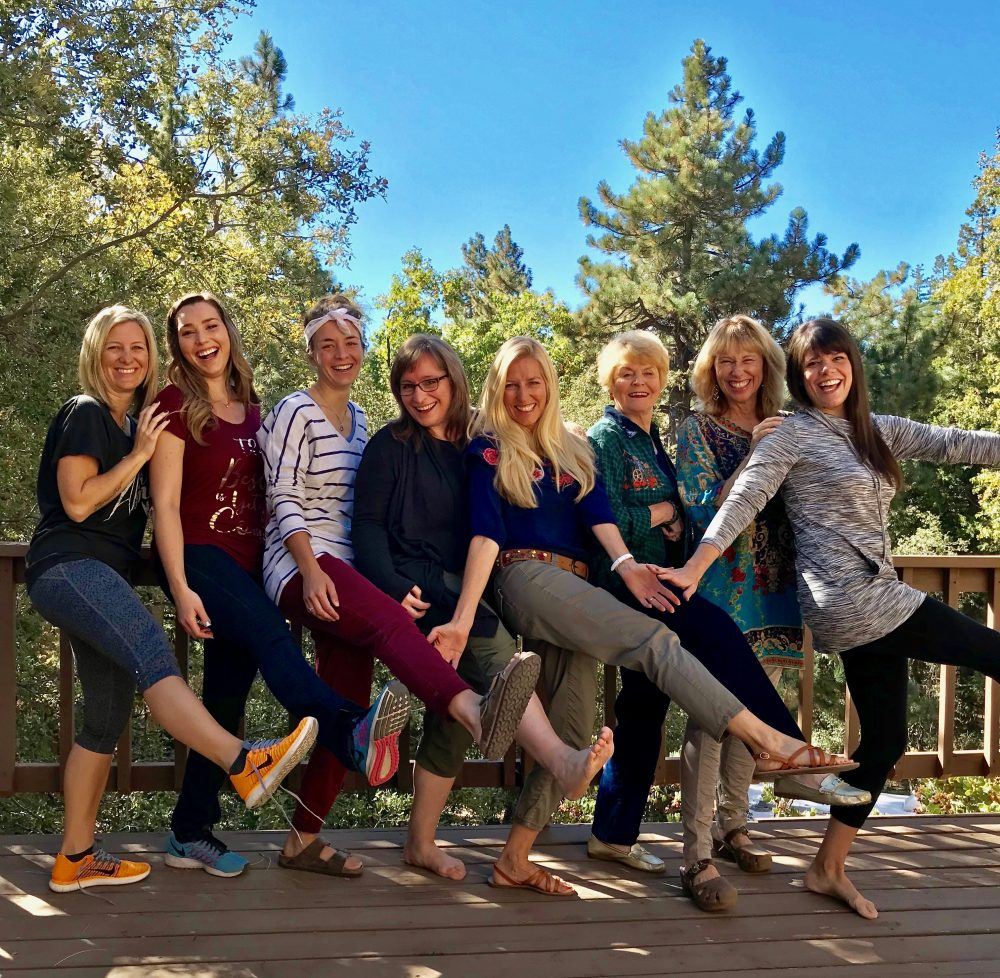

¿Quienes Somos?
Free soul house es un espacio creado para perderte en un entorno rodaeado de naturaleza, en donde te encontrarás a ti mismo permitiéndote el descanso de la vida cotidiana a través de retiros y eventos de diferente tipo cuyo objetivo principal es el crecimiento personal y la vuelta a la esencia, al origen, al hogar.
Somos igualmente una fundación que se encarga de dar alojamiento a animales en estado de indefensión permitiéndoles recuperar su estado natural y ubicándolos en hogares definitivos.
Equipo
Somos un grupo multidisciplinar de mujeres que nos encargamos de que tu estancia supere tus expectativas, tenemos dentro de nuestro equipo, chef y personal de cocina, instructores de yoga y terapistas en diversas ramas, y personal encargado de limpieza y mantenimiento general.
